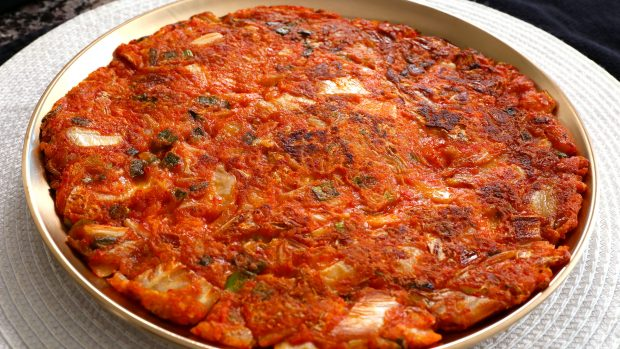

Kimchjeon
Description
A kimchi pancake is one of the easiest and quickest things to make and is one of Koreans' all time favorite dishes. It's hot, spicy, crispy, a little sweet, sour, and a little salty. It is not only a great snack but also it goes well with rice as a side dish, and is great in lunchboxes in place of plain kimchi.
How about having a Korean style kimchi pancake party with your family or friends? Enjoy the recipe and show me some photos of your kimchi pancake day!
Ingredients
- ½ lb well-fermented napa cabbage kimchi, chopped into small pieces, plus 2 tablespoons of the brine
- 3 scallions, chopped
- ½ tsp sugar
- ½ cup all-purpose flour
- ½ cup water
- 4 tbsp vegetable oil
Steps
- Combine the kimchi, kimchi brine, scallions, sugar, flour, and water in a medium bowl and mix well with a spoon
- Heat a 12-inch nonstick skillet over medium heat
- Add 2 tablespoons of the vegetable oil and swirl to coat the bottom of the pan
- Pour the batter into the pan and spread it with the back of a spoon or a spatula to make a large circle
- Cook until the bottom is golden brown and crisp, 3 to 5 minutes
- Carefully turn the pancake over. Drizzle the remaining 2 tablespoons oil around the edges of the skillet, then lift the pancake with a thin spatula to allow the oil to run underneath and tilt the pan to spread it evenly
- Cook until the bottom of the pancake is light golden brown and crisp, 3 to 5 minutes
- Flip it one more time and cook for another minute
- Slide onto a large serving platter and serve immediately